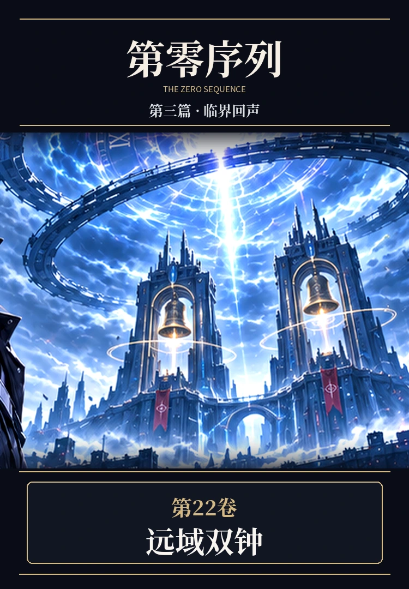

PART THREE · VOLUME 22 · FULL 10 CHAPTERS
第二十二卷《远域双钟》

正式复测邀请将顾长渊带往陌生的技术记录，旧航图的争议却在万界里引发真实险情。在剑术、证据与伙伴的选择之间，第三篇的未知正在扩大。
PART THREE · VOLUME 22 · FULL 10 CHAPTERS

正式复测邀请将顾长渊带往陌生的技术记录，旧航图的争议却在万界里引发真实险情。在剑术、证据与伙伴的选择之间，第三篇的未知正在扩大。